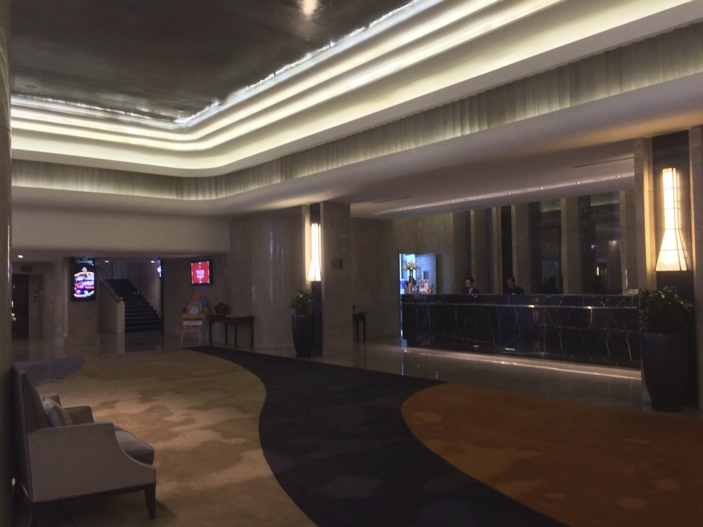
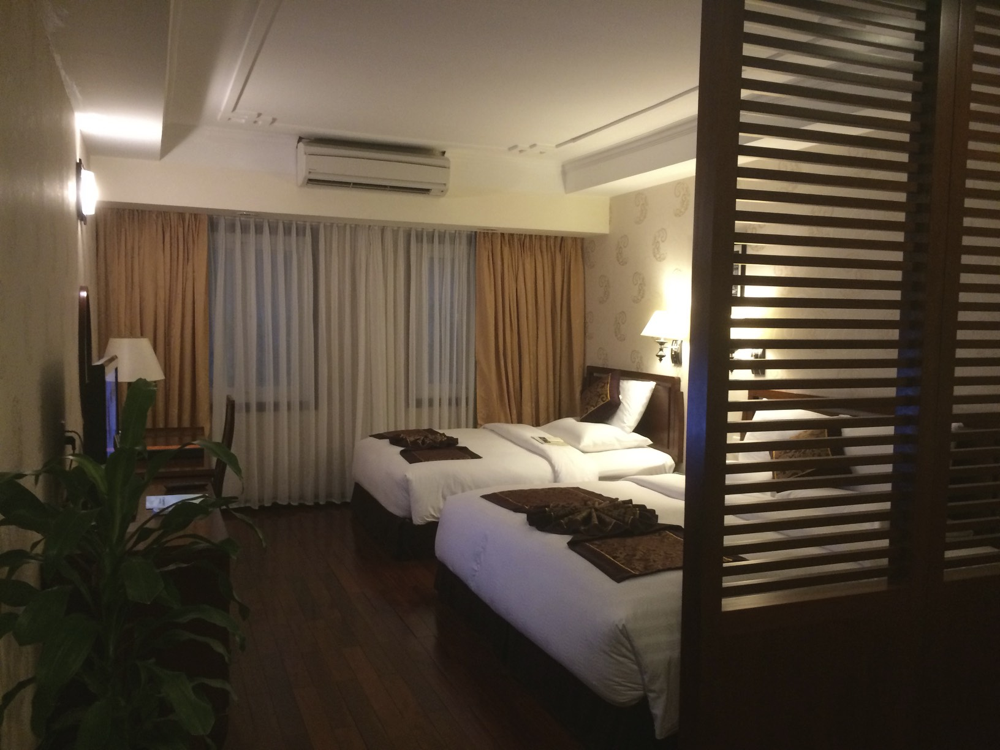
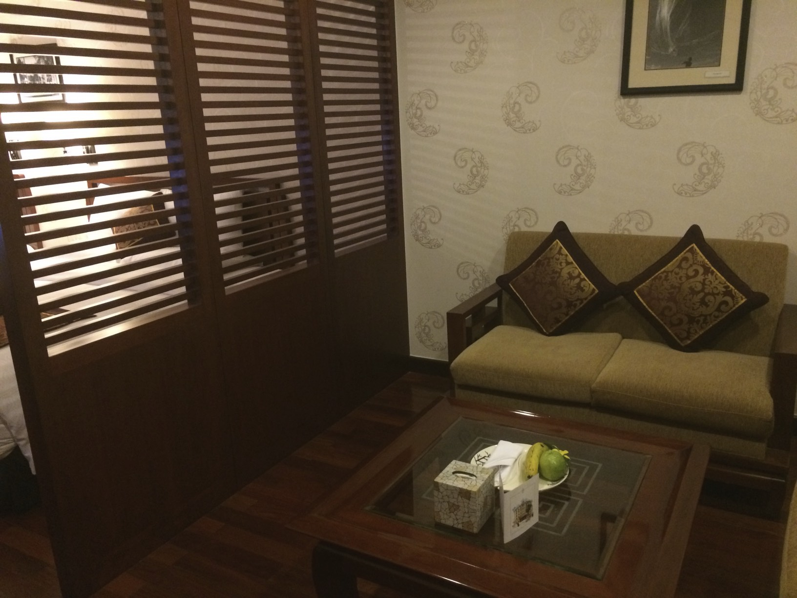
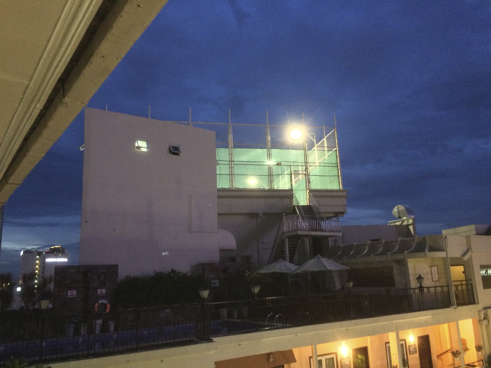
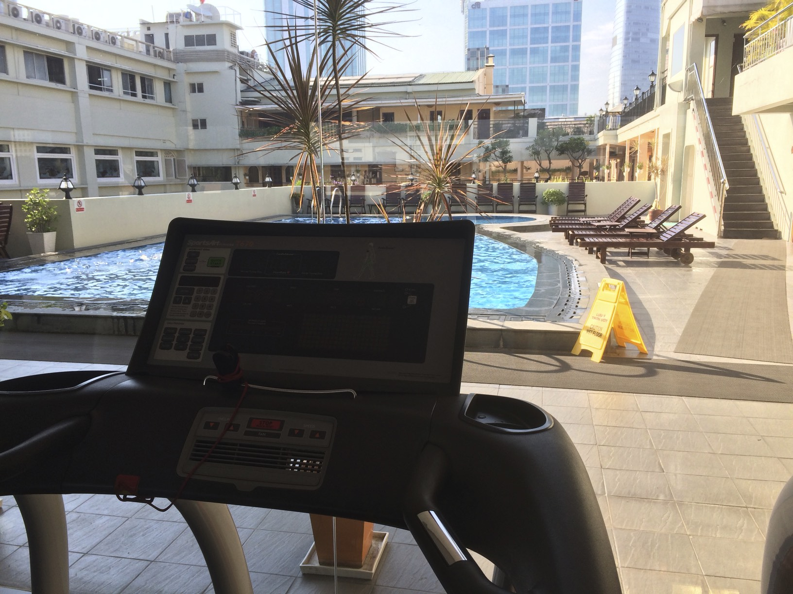

Rex Hotel in Saigon
Der Erste, der es mir erwähnte, war mein Schwiegervater (Danke Henry!). Er sagte: „Wenn Sie nach HCMC gehen, übernachten Sie im berühmten Hotel Rex?“. Ich hatte noch nie davon gehört, aber er erzählte mir von den Amerikanern, die während des Amerikanischen Krieges dort wohnten (so nennen sie diesen Krieg hier in Vietnam). Als ich Treffen hier in Saigon organisierte, schlug ein weiterer Gesprächspartner, den ich treffen sollte, eine Liste von Hotels vor, in denen wir uns treffen könnten, und als ich das Rex sah, wählte ich sofort dieses aus. Außerdem lag es innerhalb unseres Budgets.
Was ist also besonders am Rex Hotel? Sicherlich seine Geschichte. Und der Stil ist besonders und ungewöhnlich. Es ist kein topmodernes Luxushotel, aber es ist unkompliziert und hat viele Annehmlichkeiten.
Es ist sehr gut gelegen, direkt im Zentrum von Saigon
Dies ist der Platz direkt vor dem Rex Hotel:

Es hat einen schönen Eingangsbereich, der dem asiatischen Bedürfnis, zu prahlen, gerecht wird

Die Zimmer sind schön, geräumig und sauber. Und das Beste: Kein Teppich!


Sie haben die berühmte Roof Top Bar – obwohl sie jedes Mal, wenn ich nachschaute, ziemlich leer war:


Sie haben mehrere Pools. Das ist der zentrale und größte:
Und sie haben einen Tennisplatz. Ja, mitten im super geschäftigen Saigon haben sie obendrein einen Tennisplatz:

Da Laufen in den Straßen von Saigon keinen Spaß macht (ich vermisse die Strände von Da Nang!), nutzte ich jeden Morgen ihre Laufbänder und den Pool:

Abgesehen davon, dass Strände einfach 100-mal schöner sind, bringt einen die Musik im Fitnessstudio wirklich um!
Jedenfalls war es schön, hier zu bleiben.